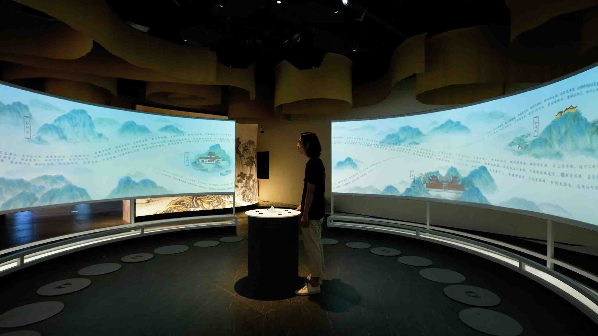

Yumeng Hou
Intangible Heritage x Computational Archives x Digital Embodiment

Selected Publications
Please refer to my Google Scholar profile a complete list of publications and SCOPUS for the citation report.
Refereed Journal Articles
- Hou, Y.*, & Kenderdine S. (2024). “Ontology-based Knowledge Representation for Traditional Martial Arts”. Digital Scholarship in the Humanities 39(2), 575–592. https://doi.org/10.1093/llc/fqae005
- Hou, Y.*, & Yuan L. (2023). “Building a knowledge graph of Chinese kung fu masters from heterogeneous bilingual data”. Journal of Open Humanities Data. https://doi.org/10.5334/johd.136
- Hou, Y.*, Seydou F.M., & Kenderdine S. (2023). "Unlocking a multimodal archive of Southern Chinese martial arts through embodied cues". Journal of Documentation. Vol.Ahead-of-print. https://doi.org/10.1108/JD-01-2022-0027
- Hou, Y.*, Kenderdine S., Adamou, A., Picca, D., & Egloff, M. (2022). "Digitizing Intangible Cultural Heritage Embodied: state of the art". Journal on Computing and Cultural Heritage. https://doi.org/10.1145/3494837
- Hou, Y.* (2021). "Accessing, Representing, and Transmitting Cultural Heritage through Digital Archives: Challenges and Opportunities". Digital Humanities Research, 4(1), 77-91. http://dhr.ruc.edu.cn/CN/Y2021/V1/I4/77
- Alliata, G.*, Hou, Y., & Kenderdine S. “Augmenting access to embodied knowledge archives: a computational framework”. Digital Humanities Quarterly. dhq/vol/18/2/000722
- Adamou, A.*, Picca, D., Hou, Y., & Granados-García, P. L. "The Facets of Intangible Heritage in Southern Chinese Martial Arts: Applying a Knowledge-Driven Cultural Contact Detection Approach". Journal on Computing and Cultural Heritage, 16 (3), Article 63. https://doi.org/10.1145/3606702
- Xia, J.#, Hou, Y.#, Chen, Y. V., Qian, Z. C., Ebert, D. S., & Chen, W.* (2017). "Visualizing rank time series of Wikipedia top-viewed pages". IEEE computer graphics and applications, 37(2), 42-53. https://doi.org/10.1109/MCG.2017.21
Refereed Conference Proceedings
- Hou, Y.* (2023). “Co-encoding embodied knowledge in Southern Chinese martial arts: a collaboration between computists, experts, and digital models”. Long paper presentation at Digital Humanities 2023: Book of Abstracts, July 10-14 2023, Graz, Austria. Paul Fortier Prize (best paper) candidate. [Abstract]
- Hou, Y.*, & Kenderdine S. (2022). Encoding the Whole-of-Environment Knowledge for Intangible Cultural Heritage: A Computational Experiment with the Hong Kong Martial Arts Living Archive. In (IN)TANGIBLE HERITAGE(S): Design, culture and technology – past, present, and future, June 15-17, Canterbury, UK. AMPS Proceedings Series 29.1, pp.121-132. [PDF]
- Hou, Y.* (2022). Augmenting knowledge exploration using agent-based models: A computational experiment with the Hong Kong Martial Arts Living Archive. 7th International Martial Arts Studies Conference. June 29 - July 2 2022, Lausanne, Switzerland. [Abstract]
- Adamou, A.* , Hou, Y.*, Picca, D.*, Egloff, M., & Kenderdine S. (2021). Ontology-mediated cultural contact in Southern Chinese martial arts. In Proceedings of the International Joint Workshop on Semantic Web and Ontology Design for Cultural Heritage. [PDF]
- Picca, D.*, Adamou, A.*, Hou, Y. et al. (2022). Knowledge organization of the Hong Kong Martial Arts Living Archive to capture and preserve intangible cultural heritage. In DIGITAL HUMANITIES 2022, July 25-29, Tokyo. Book of Abstracts of DH2022, pp.329-331. [PDF]
- Xia, J., Chen, W.*, Hou, Y., et al. (2016). Dimscanner: A relation-based visual exploration approach towards data dimension inspection. In 2016 IEEE Conference on Visual Analytics Science and Technology (VAST) (pp. 81-90). IEEE. https://doi.org/10.1109/VAST.2016.7883514
Contributions to Books
- Kenderdine, S., Hibberd, L., Shaw, J., Chang, T.-Z., & Hou, Y. (2023). "Archery Rites: Re-making Confucian Rites." Chinese Archery Studies: Theoretical and Historical Approaches to a Martial Discipline. Springer. https://doi.org/10.1007/978-981-16-8321-3_13
- Hou, Y. (2024). “Reliving martial arts classics in the digital era”. 讀書雜誌//Dushu Magazine, issue 10. Joint Publishing (H.K.). [preview]
Major Research Projects

Hong Kong Martial Arts Living Archive (HKMALA)
HKMALA encompasses the first-ever comprehensive digital strategy of archiving and annotating a living kung fu tradition using state-of-the-art motion capture and audiovisual recording tools.

Taking into account the deep cultural connection between Chinese Martial Arts and other types of performing arts, the project represents the first systematic attempt to develop a scientific movement programme.

CROSSINGS: Computational Interoperability For Intangible and Tangible Cultural Heritage
CROSSINGS aims to develop an ontological model that integrates data on intangible heritage by combining aspects of haptics, pose, and motion with meaningful traits of traditions and folklore.
Major Exhibition & Curatorial Works

Digital Experience Centre for Chinese Classical Poetry Culture, Keqiao (2021)
A pioneering exhibition intertwining cultural elements such as poetry, local chronicles, historical figures, and paintings, brought to life through digital interaction and engaging experiences.

An immersive, interactive learning space created for Daning International School, Shanghai.

Natural Origins of The Internet (2017)
Dataviz and media art installation at the 2050 Museum of Inspiration, Hangzhou, China.
Archived Projects

Hibachi - A connected self-heating lunchbox (EPFL-ECAL, 2015-2017)
Connected with an application, Hibachi is the first elegant, connected and wireless lunchbox that warms your homemade meal to the perfect temperature, everywhere at any time.

EmovDiary: Visualizing Personal Nutrition Intake and Emotional Response (EPFL, 2017)
EmovDiary presents a two-level timeline representation featuring intuitive visual design, interactive visualisation and dynamic animations, which engages users with exploring their dietary logs to develop mindful awareness of eating behaviours.

AquA: A connected virtual aquarium (EPFL-ECAL, 2016)
A virtual aquarium motivating knowledge-sharing engagement, designed for Médecins Sans Frontières (MSF).

SPARK - Your Personal Stress Management Coach (EPFL, 2016)
A cautiously designed interactive stress management APP that integrates scientific approaches and motivating journey paths.

MOOC Learning Strategies Flow (EPFL, 2015)
Users who take our MOOCs have different ways of learning that they adopt from one week to the next. By modelling these learning strategies as a state machine, we can determine a path that students followed from beginning to end.

Dimscanner, IEEE VAST 2016 (ZJU VAI, 2013-2015)
A relation-based visual exploration approach towards data dimension inspection.

WikiTopReader, IEEE CG&A 37(2) (ZJU VAI, 2013-2014)
Visualizing Rank Time Series of Wikipedia Top-Viewed Pages.